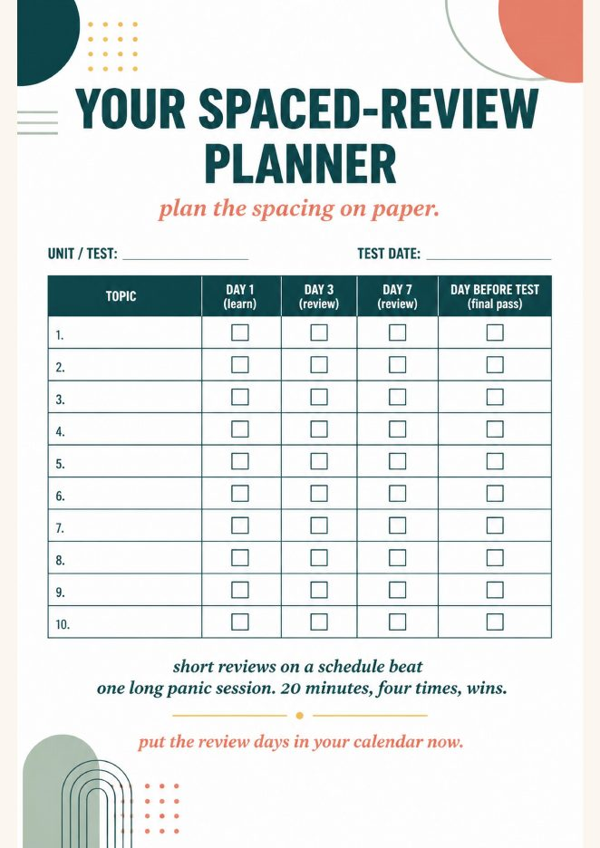
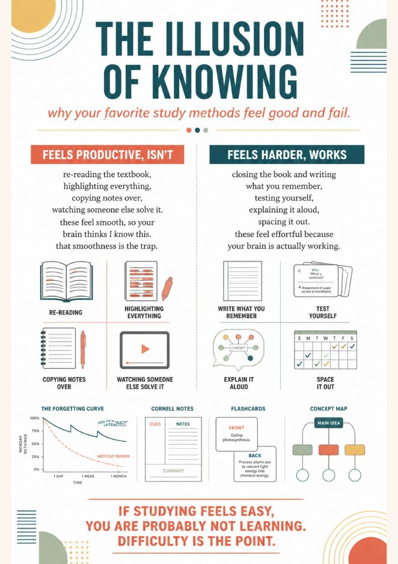

Quirepress
Quirepress
Why students study the night before, and feel fine about it
Ask a class when they review for a test and most will say the night before. Ask if that works and most will say yes. They are not lying. Rereading notes the night before feels like it works, because everything on the page looks familiar. Familiar is not the same as retrievable, and the test only asks for retrievable.
The clearest demonstration is a 2006 study by Roediger and Karpicke. Students either reread a passage repeatedly or read it once and then tested themselves. The rereading group was the most confident they would remember it. A week later they had forgotten about half of what they knew; the self-testing group had kept most of it. The students who felt best did worst, and they could not feel the difference.
That is the illusion of knowing, and it is why telling students to “review more” changes nothing. They think they already do.
The forgetting curve on one page
The chart above does the explaining. Memory for new material drops fast in the first day or two, then keeps sliding. Each short review pulls it back up and makes the next drop slower, so four spaced reviews hold far more than one long one.
The curve itself is old. Hermann Ebbinghaus measured it on himself in 1885 by memorizing nonsense syllables and timing how much faster he could relearn them after a delay. It held up: in 2015, Murre and Dros repeated the whole experiment and published the replication in PLOS ONE. They also found something useful for teenagers. The curve has a small bump upward around the 24-hour mark, most likely a night of sleep consolidating the memory. The study session you do with your eyes closed is real.
One number to leave out: the “we forget 70 percent in 24 hours” line that circulates on study blogs. It is a misreading of Ebbinghaus’s savings scores. The drop is steep; it is not that steep, and students will believe a chart more than a scary statistic anyway.
Is day 1, day 3, day 7 real science?
Partly, and the honest version is more convincing than the slogan. What the research supports is spacing reviews over days rather than massing them, and growing the gaps as the test moves further out. In the largest study of review timing, Cepeda and colleagues tested more than 1,300 people and found that for a test one week away the best single gap between study sessions was about one day, and for a test five weeks away about eleven days.
Nobody has tested “day 1, 3, 7, and the day before” as a package. It is a classroom approximation of that finding: one review after a night’s sleep, another a few days later, another a week out, then a light pass before the test. It is the simplest version students will actually follow, and following it beats the perfect schedule nobody keeps.
The 15-minute lesson
Run it in advisory, study hall, or the first class of a new unit. You need the chart on the board, yesterday’s content fresh enough to test, and the review-day planner printed, one per student.
Project the chart. Ask: “Where are you on this curve for what we did on Tuesday?” Most will point near the bottom. Do not reassure them.
Brain dump. Notes closed. Two minutes to write everything they remember from the last lesson. Then open the notes and mark what they got right, what they missed, and what they got wrong. The gaps are the point. Say so.
Fill the planner. Students take their next real test date and write four review dates: day 1, day 3, day 7, and the day before. Phones out for this one; the dates go in the calendar they actually look at.
Pair-explain. Each student explains one item from their brain dump to a partner without notes. Exit line: the subject, the test date, the first review date.
That is the whole lesson. The chart teaches the timing; the brain dump teaches the method; the planner makes it a commitment with dates on it.


What a review is, and is not
A review resets the curve only if it makes the brain pull the memory out. Rereading does not. Highlighting does not. Dunlosky and colleagues rated ten common study techniques in 2013 and put practice testing and spaced practice at the top, with rereading, highlighting and summarizing at the bottom. Students are mostly using the bottom of the list.
Three reviews that fit in five minutes and count:
- The brain dump. Blank page, notes closed, write what you remember, then check. The fastest honest test there is.
- Self-testing. Turn the notes into questions, answer out loud or on paper before flipping. Sort into “got it” and “not yet,” and review the not-yets more often.
- Explain it. Teach the idea to a partner, an empty room, or a pet. Where the explanation stumbles is exactly what to study next.
The difference students notice right away is that these feel harder. Tell them in advance: if studying feels easy, you are probably not learning. The difficulty is the point.
Making it stick for 30 days
One lesson changes a belief. A habit takes a few weeks. The unit includes a 30-day strategy tracker where students pick one method, mark each day they use it, and write what changed at two weeks and at thirty. For the first unit, check planners on day 3 and day 7. After that, they run it themselves, and the ones who were cramming quietly stop.

Brain-Based Study Skills, High School
Grades 9–12 · 42 pages · how memory works · the illusion of knowing · three retrieval methods · spacing, interleaving, sleep · exam-week game plan · the planner, the tracker, four anchor charts, quiz with key · $11.95
Questions teachers ask
How do you teach the forgetting curve to high school students?
Project one chart, run a two-minute brain dump on yesterday’s material so they feel the drop, then have them write four review dates on a planner. Fifteen minutes. The chart does the convincing; the brain dump does the feeling.
Is the day 1, day 3, day 7 schedule backed by research?
It is a classroom-friendly approximation. The research supports spacing over cramming and longer gaps for tests further away. The exact days matter less than doing the reviews, and this is the version students keep.
What counts as a review that resets the curve?
Retrieval. Close the notes and write what you remember, answer questions, or explain it to someone, then check. Rereading and highlighting feel like reviewing and mostly are not.
- Ebbinghaus, H. (1885). Über das Gedächtnis. English translation: Memory: A Contribution to Experimental Psychology (1913).
- Murre, J. M. J., & Dros, J. (2015). Replication and analysis of Ebbinghaus’ forgetting curve. PLOS ONE, 10(7), e0120644.
- Roediger, H. L., & Karpicke, J. D. (2006). Test-enhanced learning: Taking memory tests improves long-term retention. Psychological Science, 17(3), 249–255.
- Dunlosky, J., Rawson, K. A., Marsh, E. J., Nathan, M. J., & Willingham, D. T. (2013). Improving students’ learning with effective learning techniques. Psychological Science in the Public Interest, 14(1), 4–58.
- Cepeda, N. J., Vul, E., Rohrer, D., Wixted, J. T., & Pashler, H. (2008). Spacing effects in learning: A temporal ridgeline of optimal retention. Psychological Science, 19(11), 1095–1102.
- Bjork, R. A. (1994). Memory and metamemory considerations in the training of human beings. In Metacognition: Knowing about Knowing. MIT Press. The idea of desirable difficulties.